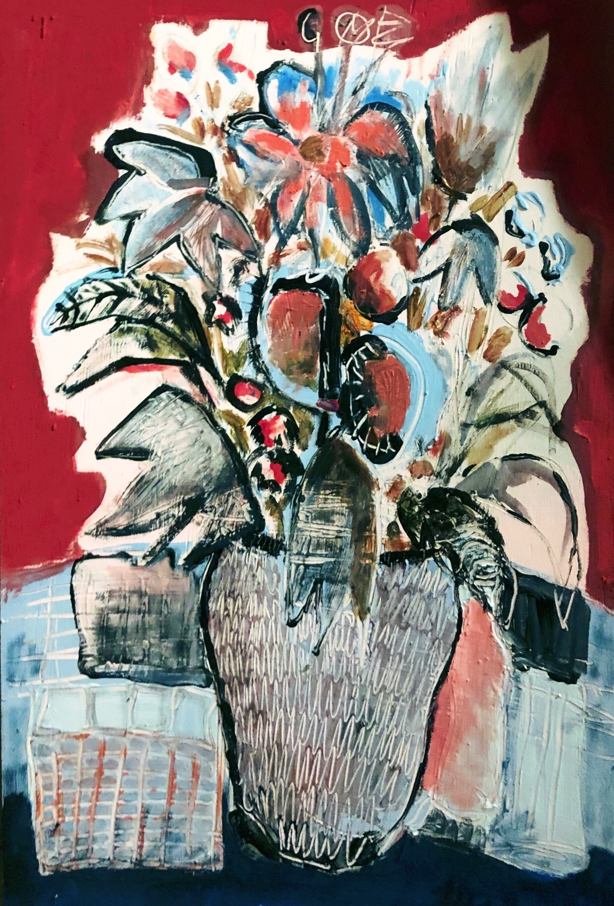
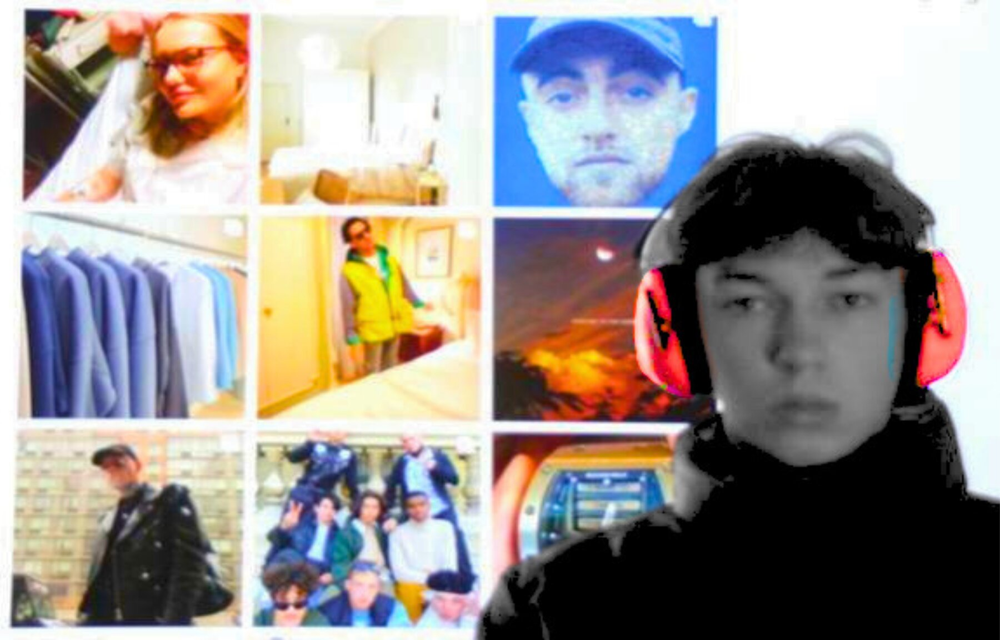
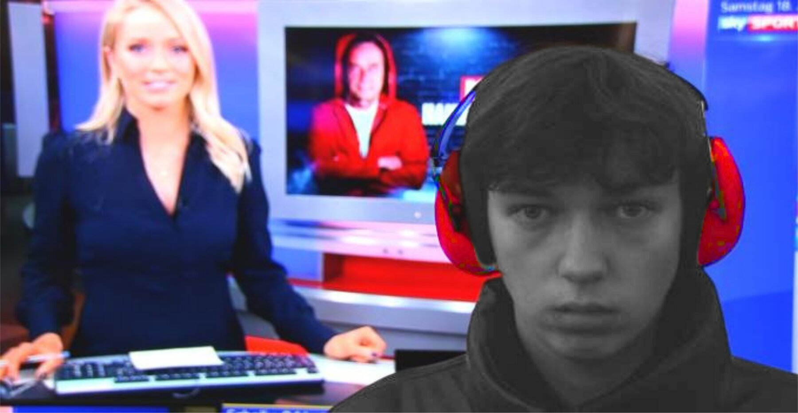
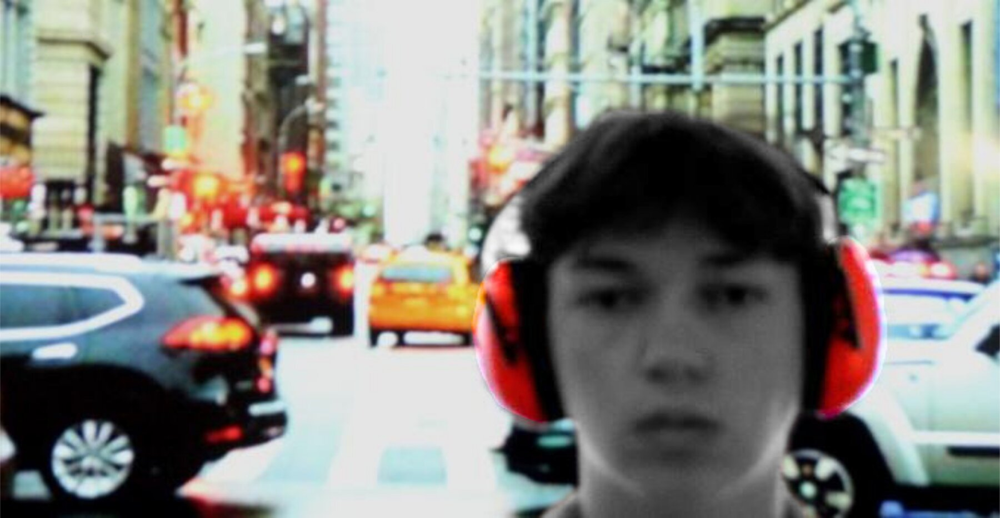

← Kunst · Archiv · vollständiger Bestand
Das Archiv.
Hier liegt alles: sämtliche Zeichnungen, alle Original-Seiten des Notizbuchs, die Reise-Skizzen und die fotografischen Serien. Ungefiltert und ohne Auswahl — die kuratierte Fassung steht auf der Kunstseite.
Bild anklicken zum Vergrößern · Pfeiltasten zum Blättern
Gezeichnete Gesichter
Tusche · Aquarell · Marker · 2021–2023
Gesichter gehören zu meinen wiederkehrenden Motiven. Mich interessiert dabei weniger das Porträt einer bestimmten Person als der Ausdruck menschlicher Erfahrung. Die Figuren stehen selten für einzelne Menschen. Sie sind Verdichtungen von Erinnerungen, Empfindungen und Fragen, die viele kennen.
Zwischen Ernst und Ironie, Verletzlichkeit und Absurdität kreisen die Zeichnungen um Schuld, Freiheit, Verantwortung, Würde, Sehnsucht, Gewalt und Trost. Manche Figuren bleiben anonym, andere wirken vertraut. Einige bewegen sich bewusst zwischen Mensch und Symbol, zwischen Wirklichkeit und Traum.
Die Arbeiten entstanden über mehrere Jahre hinweg. Manche innerhalb weniger Minuten, andere entwickelten sich über Wochen oder Monate. Zusammen bilden sie kein Tagebuch, sondern ein fortlaufendes Archiv von Beobachtungen über das Menschsein.
Malerei
Blumenstillleben
Eine einzelne malerische Arbeit zwischen den umfangreicheren zeichnerischen und fotografischen Serien.

Originale
Fotografiert statt gescannt.
Papier, Ringe, Schatten, Papierwölbungen und Gebrauchsspuren bleiben bewusst sichtbar. Die Zeichnungen sollen nicht nur als Motive erscheinen, sondern auch als Gegenstände mit eigener Geschichte — so, wie sie tatsächlich entstanden sind.


Reise-Skizzen
Frankfurt · Portugal · Italien · unterwegs
Neben den Werkserien gibt es ein zweites Archiv. Diese Zeichnungen entstehen direkt vor Ort — häufig innerhalb weniger Minuten. Sie versuchen nicht, Orte möglichst genau wiederzugeben, sondern einen flüchtigen Eindruck festzuhalten: Licht, Atmosphäre, Begegnungen oder kleine Situationen, die im Vorübergehen auffallen.
Hier geht es weniger um Interpretation als um Aufmerksamkeit.
Fotografie
Stillleben · Räume · Landschaften
Fotografie verstehe ich ähnlich wie Zeichnen. Nicht als Dokumentation, sondern als Auswahl. Mich interessieren Dinge, die leicht übersehen werden: Figuren auf Fensterbänken, Licht in leeren Räumen, Spiegelungen, Oberflächen oder zufällige Konstellationen von Gegenständen. Oft genügt eine kleine Verschiebung der Aufmerksamkeit, damit Vertrautes anders erscheint.
Stille
Fotografische Serie · 2020
Entstanden aus einer Aufgabe zum Thema „Stilles Leben".
Mich interessierte weniger das klassische Stillleben als die Frage, was Stille in einer Zeit permanenter Aufmerksamkeit überhaupt bedeutet.
Mit roten Gehörschützern an Orten voller Werbung, Verkehr und Reizüberflutung entstand eine Serie über Rückzug, Konzentration und den Wunsch, wieder zuhören zu können.
„Mit dem Begriff Stille verbinde ich Ruhe und Frieden. Zeit zum Innehalten und Neu-Ausrichten.“
„Wann erleben wir heute noch echte Stille?“



Reflexion
Der Mensch ist heute zweitrangig. Rückt hinter all dem in den Hintergrund.
Nicht das perfekte Bild des Menschen, das wir täglich präsentieren, der eigentliche Mensch, mit seiner empfindlichen Seele, der dahinter steht und unter dem Lärm des Alltags Schaden zu nehmen droht.
Deshalb wollte ich mir meinen Moment der Stille schaffen und anregen zu einem Gegenentwurf, in dem wir statt kopflos zu schreien lieber einmal zuhören, was wirklich wichtig ist.
Figuren
Orte & Landschaft
Abstraktes